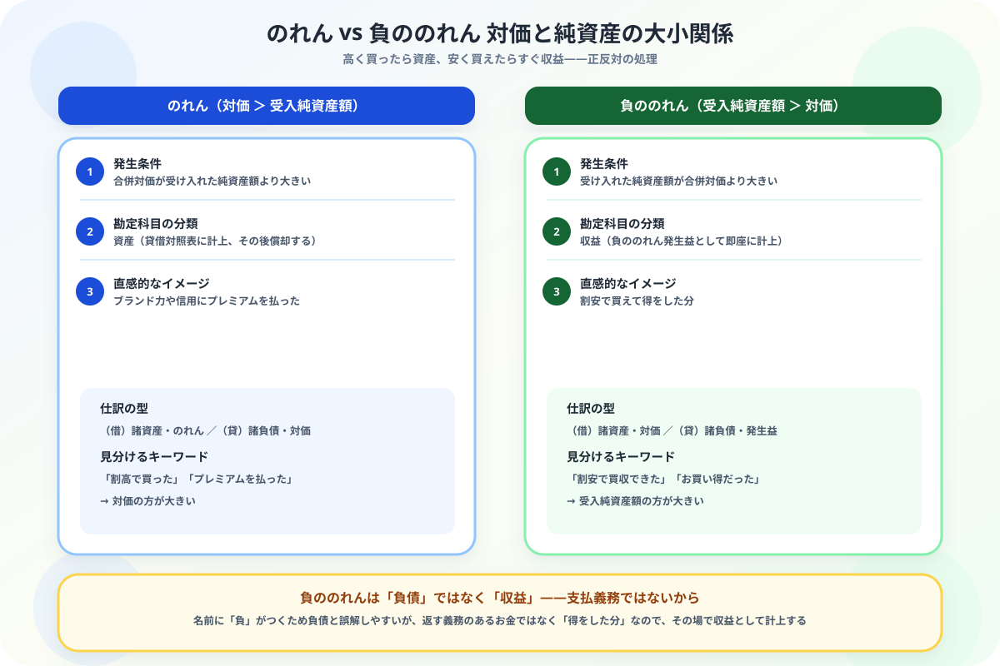

のれんと負ののれんの違いがわからない人へ
「対価と純資産の大小関係」から整理する図解ガイド
この記事でわかること（5秒まとめ）
- どちらも合併（企業を買う取引）で発生する差額——名前が対になっているので混同しやすい
- 本質の違いは対価と受入純資産額のどちらが大きいか——のれんは対価が大きい、負ののれんは純資産が大きい
- のれんは資産（買ったブランド力の対価）、負ののれんは収益（お得に買えた分）
- 負ののれんは「負」とつくが負債ではない——返す義務のあるお金ではないから
大谷 一輝 より
こんにちは、大谷です！
「のれん」を覚えたばかりの頃、「負ののれん」という言葉を見て、「マイナスののれん……？ のれんが負債になるってこと？」と真剣に勘違いしていました。名前が対になっているせいで、てっきり資産と負債の対だと思い込んでいたんです。
でも実際に教科書を読み込んでみると、負ののれんは負債ではなく収益でした。この意外な事実を知ると、逆に「なるほど、そういう理屈か」とスッキリ腑に落ちます。今日は一緒にその理屈を整理していきましょう！
また、記事の末尾のほうにある【いいねボタン】をポチッと押してもらえると、めちゃくちゃ嬉しいです！
受験生
「負ののれん」という名前から、てっきり負債の一種だと思っていました……。実際は何なんですか？
大谷（簿記1級勉強中）
その勘違い、すごくよくわかります！でも負ののれんは収益なんです。会社を買収するとき、支払った対価より受け入れた純資産の方が多ければ、「安く買えてラッキーだった」わけですよね。この得した分を、その場で利益として計上するのが負ののれん発生益です。返す義務があるお金ではないので、負債にはなりません。
受験生
なるほど、得した分だから収益なんですね！じゃあ普通の「のれん」はどういうときに発生するんですか？
大谷（簿記1級勉強中）
その逆です。受け入れた純資産額より多く対価を払った場合、その差額がのれんになります。ブランド力や将来の収益力に「プレミアム」を払ったと考えるので、こちらは資産として計上し、その後少しずつ償却していきます。「対価と純資産、どっちが大きいか」——この1点だけ見れば、迷いません。
❓ 発生条件の違い——「対価が大きいか」「純資産が大きいか」
のれんと負ののれんは、どちらも会社の合併時に、合併の対価と受け入れた純資産額との間に差額が生じたときに発生します。どちらが大きいかによって、正反対の処理になります。
対価の方が大きい
のれん
→ 資産として計上、その後償却する
ブランド力や将来の収益力にプレミアムを払ったと考える。割高な買い物をした状態。
受入純資産額の方が大きい
負ののれん（発生益）
→ 収益として即座に計上する
相場より安く買収できたと考える。負債ではなく、得をした分をそのまま利益にする。

📝 ① のれんが発生するときの仕訳
例題
A社はB社を吸収合併し、対価として現金150円を支払った。合併時のB社の諸資産は200円、諸負債は80円（いずれも時価）である。
受入純資産額 ＝ 200円（諸資産）－80円（諸負債）＝120円
対価150円 ＞ 受入純資産額120円 → 差額30円はのれん
対価150円 ＞ 受入純資産額120円 → 差額30円はのれん
| 借方 | 金額 | 貸方 | 金額 |
|---|---|---|---|
| 諸資産 | 200 | 諸負債 | 80 |
| のれん | 30 | 現金 | 150 |
💰 ② 負ののれんが発生するときの仕訳
例題
A社はB社を吸収合併し、対価として現金60円を支払った。合併時のB社の諸資産は120円、諸負債は50円（いずれも時価）である。
受入純資産額 ＝ 120円（諸資産）－50円（諸負債）＝70円
対価60円 ＜ 受入純資産額70円 → 差額10円は負ののれん発生益
対価60円 ＜ 受入純資産額70円 → 差額10円は負ののれん発生益
| 借方 | 金額 | 貸方 | 金額 |
|---|---|---|---|
| 諸資産 | 120 | 諸負債 | 50 |
| 現金 | 60 | ||
| 負ののれん発生益 | 10 |
負ののれんが負債にならない理由：差額の10円は、将来誰かに支払う義務があるお金ではありません。「割安な対価で純資産を受け入れられた」という得した事実そのものなので、負債ではなく収益（負ののれん発生益）として処理します。
🔍 ③ 見分け方の早見表
| 項目 | のれん | 負ののれん発生益 |
|---|---|---|
| 発生条件 | 対価 ＞ 受入純資産額 | 受入純資産額 ＞ 対価 |
| 勘定科目の分類 | 資産 | 収益 |
| その後の処理 | 規則的に償却する | 発生時に全額計上して終わり |
📋 まとめ：のれん vs 負ののれん 早見表
発生条件のれん＝対価が大きい／負ののれん＝純資産が大きい
勘定科目の分類のれん＝資産／負ののれん＝収益
その後の処理のれん＝償却する／負ののれん＝発生時に計上して完了
負債になるかどちらもならない（負ののれんも収益）
🧭
「対価と純資産、どちらが大きいか」——この1点でのれんと負ののれんはもう混同しません
名前は対になっていても、資産と収益というまったく違う性質を持つ2つでした。この記事が「あ、そういうことか！」につながったら、僕の執筆のモチベーション維持のために、この下にある【いいねボタン】をポチッと押してもらえると、めちゃくちゃ嬉しいです！
Study Questで今日の学習時間を記録して、簿記2級マスターへの一歩を刻んでおきましょう。